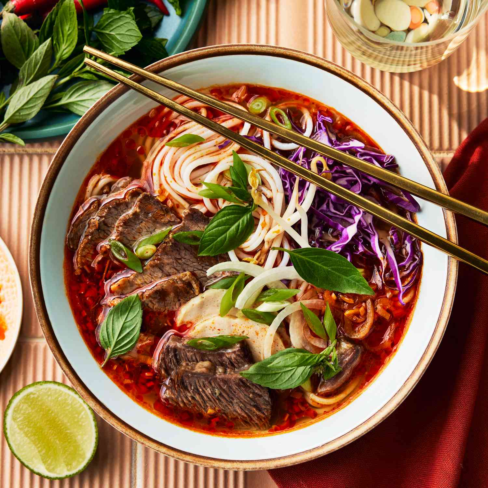

Bun Bo Hue Recipes

Home
Bún bò Huế is a flavorful Vietnamese noodle soup that originates from the central city of Huế, known for its bold and spicy cuisine. The dish features a rich, aromatic broth made by simmering beef bones, lemongrass, and sometimes pork hocks, then seasoned with shrimp paste, chili oil, and fish sauce for depth and heat. It is typically served with thick round rice noodles and tender slices of beef shank, brisket, or oxtail, along with pork knuckles or Vietnamese ham (chả lụa). The soup is garnished with fresh herbs like cilantro, basil, and mint, plus lime wedges, bean sprouts, and shredded cabbage, creating a balance of savory, spicy, and refreshing flavors.
Ingredients
For the broth
- 3–4 lbs beef bones (leg bones or marrow bones)
- 1 lb beef shank (can also use brisket or oxtail)
- 1 lb pork hock (optional, adds richness)
- 3 stalks lemongrass (bruised, cut into 4-inch pieces)
- 1 large onion (halved)
- 1 piece ginger (3 inches, sliced and charred)
- 2 tbsp fermented shrimp paste (mắm ruốc Huế, dissolved in water and strained)
- 3 tbsp fish sauce
- 1 tbsp rock sugar (or regular sugar)
- Salt to taste
For the Aromatic Chili Oil
- 1/2 cup cooking oil
- 3 tbsp chili flakes (or ground chili powder)
- 2 stalks lemongrass (finely minced)
- 1 tbsp paprika (for color, optional)
- 2 cloves garlic (minced)
- 1 shallot (finely chopped)
For Serving
- 2 packs round rice vermicelli noodles (bún, thicker than pho noodles)
- Vietnamese ham/sausage (chả lụa), sliced
- Fresh herbs: Thai basil, mint, cilantro
- Vegetables: shredded banana blossom, shredded cabbage, bean sprouts
- Lime wedges
- Thinly sliced red chili or chili paste
- Prepare and Clean the Bones & Meat
- In a large pot, boil water. Add beef bones, pork hock, and beef shank. Parboil for 5–7 minutes until scum rises.
- Drain and rinse bones and meat thoroughly under cold water. This step ensures a clear broth.
- Make the Broth
- Fill a large stockpot (6–8 quarts) with fresh water. Add cleaned bones, beef shank, and pork hock.
- Toss in lemongrass, charred onion, and ginger.
- Bring to a boil, then reduce heat to low and simmer uncovered for 3–4 hours. Skim any foam.
- Season with shrimp paste liquid, fish sauce, rock sugar, and salt. Taste and adjust as needed.
- Make the Aromatic Chili Oil
- Heat oil in a small pan.
- Add garlic, shallots, and minced lemongrass. Sauté until fragrant.
- Stir in chili flakes and paprika, then cook on low for 1–2 minutes (don’t burn the chili).
- Add this fragrant chili oil to the broth for color and spice.
- Cook the Noodles
- Boil round rice noodles according to package directions until tender.
- Drain and rinse with cold water to prevent sticking.
- Assemble the Bowl
- Place cooked noodles in a large bowl.
- Top with sliced beef shank, pork hock, and Vietnamese ham.
- Ladle hot broth over the noodles.
- Garnish with fresh herbs, lime, bean sprouts, shredded cabbage/banana blossom, and extra chili oil if you like it spicier.
Results🌶️
You’ll end up with a fragrant, spicy, and deeply savory bowl of Bún Bò Huế, rich with lemongrass aroma, layered beef flavors, and a bright red chili oil finish — served with fresh herbs and vegetables for balance.